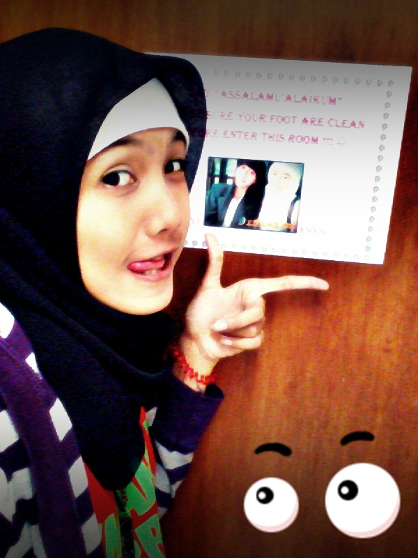

|  | Nama : Anys Luthfia Ulfa TTL : Tulungagung, 28 Desember 1993 Alamat : Jl. Jombang Gg 1 No. 20B, Malang Hobby : browsing |
Kesepuluh karakter itu adalah :
Shahihul Ibadah, Benar Ibadahnya menurut AlQur’an dan Assunnah serta terjauh dari segala Bid’ah yang dapat menyesatkannya.
Matinul Khuluq, Mulia Akhlaknya sehingga dapat menunjukkan sebuah kepribadian yang menawan dan dapat meyakinkan kepada semua orang bahwa Islam adalah rahmat bagi seluruh alam (Rahmatan Lil Alamin).
Qowiyul Jismi, Kuat Fisiknya sehingga dapat mengatur segala kepentingan bagi jasmaninya yang merupakan amanah/titipan dari Alloh SWT.
Mutsaqoful Fikri, Luas wawasan berfikirnya sehingga dia mampu menangkap berbagai informasi serta perkembangan yang terjadi disekitarnya.
Qodirun ‘alal Kasbi, Mampu berusaha sehingga menjadikannya seorang yang berjiwa mandiri dan tidak mau bergantung kepada orang lain dalam memenuhi segala kebutuhan hidupnya.
Mujahidun linafsihi, Bersungguh sungguh dalam jiwanya sehingga menjadikannya seseorang yang dapat memaksimalkan setiap kesempatan ataupun kejadian sehingga berdampak baik pada dirinya ataupun orang lain.
Haritsun ‘ala waqtihi, Efisien dalam memanfaatkan waktunya sehingga menjadikannya sebagai seorang yang pantang menyiakan waktu untuk melakukan kebaikan, walau sedetikpun. karena waktu yang kita gunakan selama hidup ini akan dipertanggungjawabkan dihadapan Alloh SWT.
Munazhom Fii Su’unihi, Tertata dalam urusannya sehingga menjadikan kehidupannya teratur dalam segala hal yang menjadi tanggung jawab dan amanahnya. Dapat menyelesaikan semua masalahnya dengan baik dengan cara yang baik.
Naafi’un Li Ghairihi, Bermanfaat bagi orang lain, sehingga menjadikannya seseorang yang bermanfaat dan dibutuhkan. Keberadaannya akan menjadi sebuah kebahagiaan bagi orang lain dan Ketiadaannya akan menjadikan kerinduan pada orang lain.
Mudah-mudahan dengan kesepuluh karakter yang dikemukakan diatas menjadikan kita termotivasi untuk dapat merealisasikannya dalam diri kita.Amin.